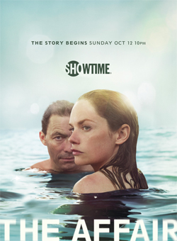

Crazy Ex GirlfriendRebecca Bunch is a Yale- and Harvard-educated real-estate lawyer, who works for a top New York City firm. She panics when offered a partnership and bumps into Josh Chan on the street. Josh was her first love from summer camp in 2005 and she never got over the way he dumped her at the end of camp. Josh tells her he could not make it in New York City and is moving back to West Covina, California ("Just two hours from the beach, four hours in traffic"). While watching a butter spread commercial, Rebecca decides to follow Josh in search of happiness. She hops a plane to L.A., drives to West Covina, gets a job at Darryl Whitefeather's West Covina law firm, rents an apartment, and flushes all her depression and anxiety meds down the sink. She becomes friends with the firm's paralegal, Paula, and her neighbor Heather and begins an on-again-off-again relationship with Josh's friend Greg, while trying to reconnect with Josh. | |
Masters of SexSet in the 1950s through the early 1970s, the series explores the research and the relationship between William Masters (Michael Sheen) and Virginia Johnson (Lizzy Caplan), two pioneering researchers of human sexuality at Washington University in St. Louis, Missouri. | |
|  | The AffairThe Affair explores the emotional effects of an extramarital relationship between Noah Solloway and Alison Lockhart (Dominic West and Ruth Wilson) when they meet in the resort town of Montauk in Long Island, New York. Noah is a New York City schoolteacher and Williams College alumnus who has had one novel published and is struggling to write a second book. He is happily married with four children, but he resents his dependence on his wealthy father-in-law. Alison is a young waitress trying to piece her life and marriage back together in the wake of her child's sudden death. The story of the affair is depicted from Noah's and Alison's perspectives respectively, complete with memory bias. |